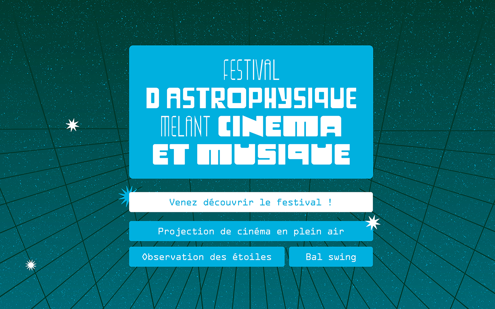
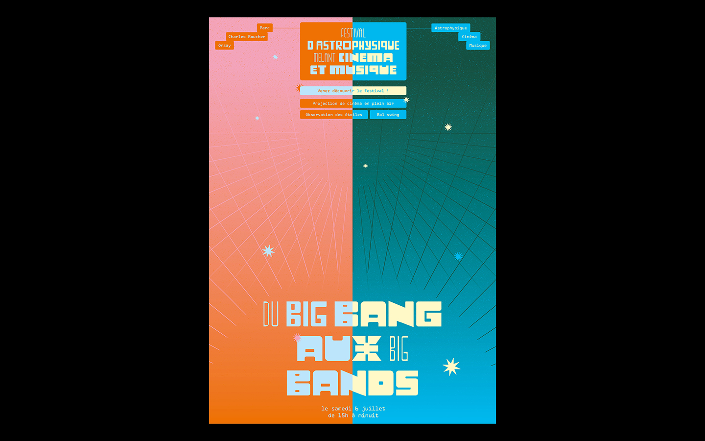
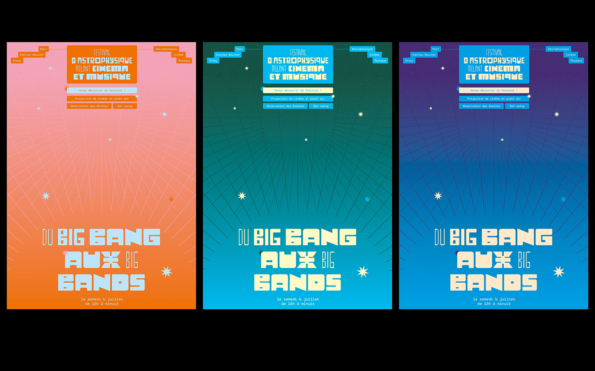
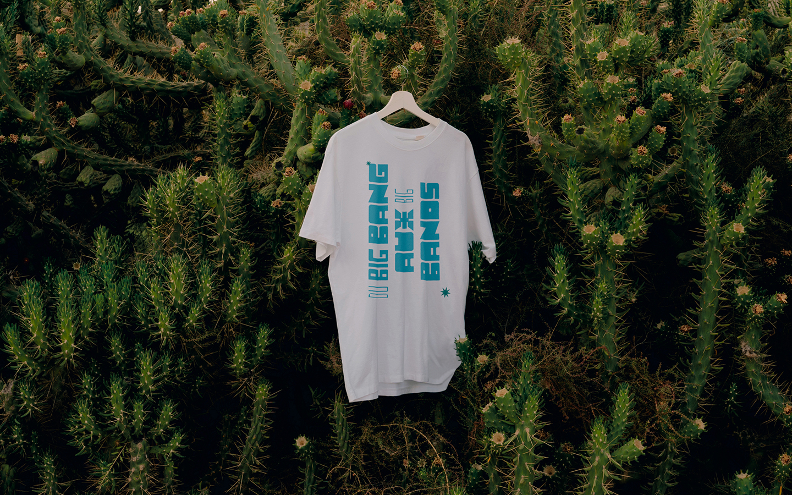
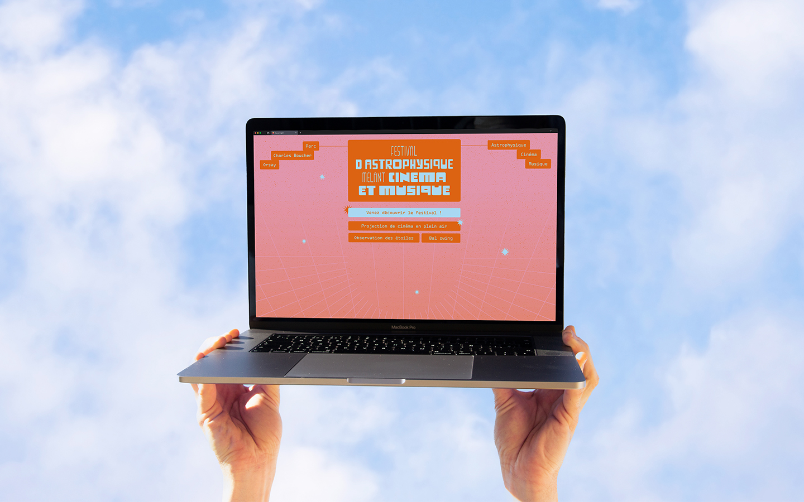

Festival du Big Bang aux Big Bands
Université Paris-Saclay
Communication print & digital
2024
Du Big Bang au Big Bangs est un festival dédié à l'astrophysique, à la musique et au cinéma organisé par La Diagonale de l'Université Paris-Saclay. Pensé pour un public familial, l’enjeu était de concevoir un visuel coloré et accrocheur. Nous avons imaginé une série de trois affiches aux dégradés vibrants, évoquant le cycle solaire, du lever au coucher, en écho à la durée du festival, condensé sur vingt-quatre heures.




